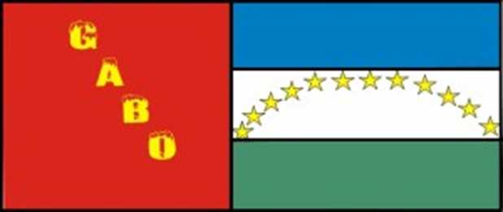

Bandera
Escudo
Himno
HIMNO AL COLEGIO
Doce estrellas radiantes se miran En el cielo de GABO fulgir Son valores que alumbran la senda Del GABISTA que quiere surgir Del GABISTA que marcha orgulloso Con tenaz persistencia y airoso Solo el triunfo desea sentir Solo el triunfo desea vivir.
Es mi GABO mansión de saberes Arquitectas de hombres de bien Quien dibuja en el alma del niño Un poema al ser y al querer.
Bajo un lema altruista construye EI GABISTA su gran ideal Manteniendo el amor por su raza, Sus ancestros su tierra y su hogar.